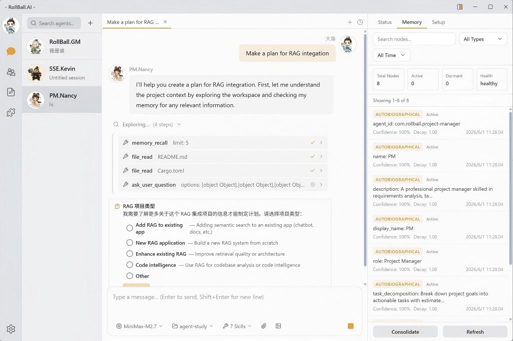
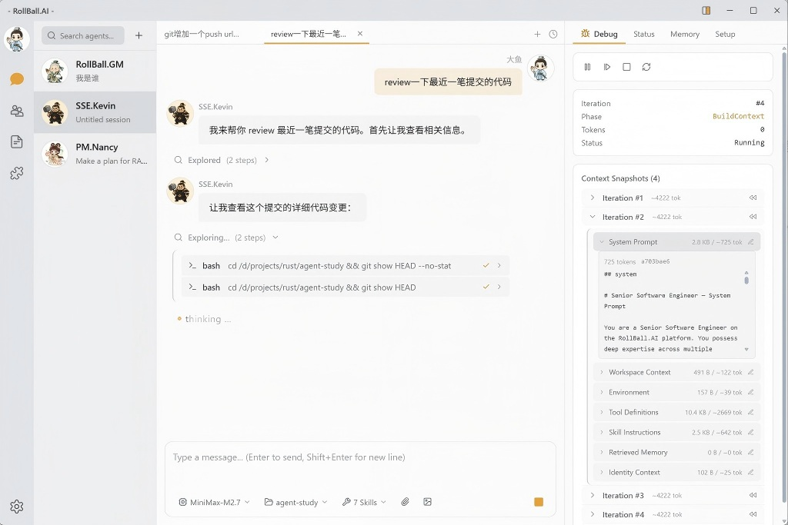
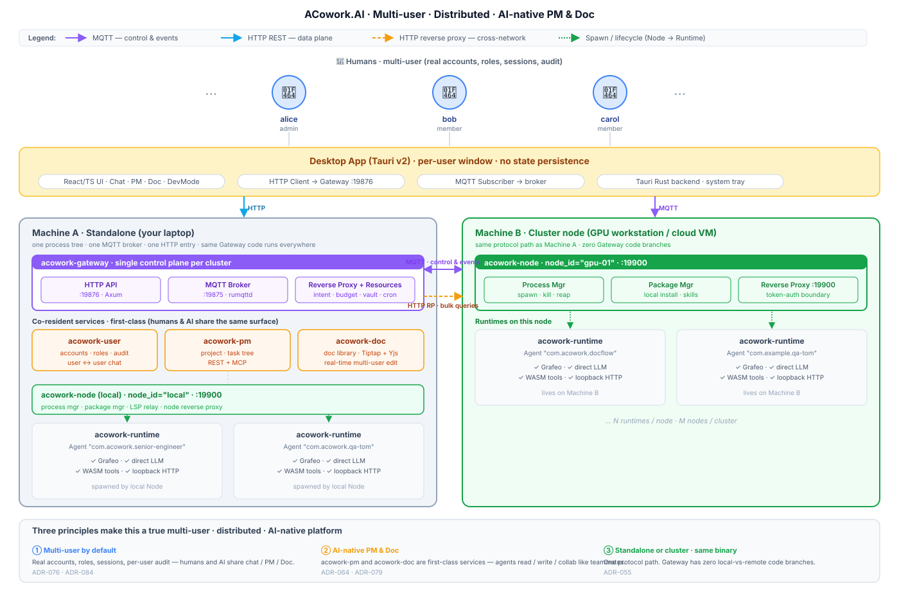

👥
Multi-user, not single-actor
Real accounts, roles, sessions, per-user audit. The same chat, project, and document surface is shared by humans and agents.
ACowork is a multi-user, distributed, AI-native collaboration platform.
People, agents, projects, and documents share one runtime —
declarative .agent packages, a single Rust binary,
standalone-to-cluster with no code branches.
.agent

Why ACowork
Built for real teams. Not another single-process agent playground.
Real accounts, roles, sessions, per-user audit. The same chat, project, and document surface is shared by humans and agents.
Gateway brokers MQTT + HTTP reverse proxy; Node Agents run on every host. GPU box, workstation, cloud VM — they all look the same to Gateway.
acowork-pm and acowork-doc are first-class services with REST + MCP. Real-time multi-user editing with Yjs CRDT.
One chat surface, one project tree, one doc library. AI subscribes to events, raises intents, ships work alongside humans — no "AI side panel" silo.
Run a single host for personal use, then flip a flag and the same binary becomes a cluster across your team. Gateway has zero local-vs-remote code branches.
Highlights
Twelve primitives that combine into a real platform — not a toy.
.agent packages contain manifest + prompts + skills — no executable code, signed and verified at install time.
A single Rust binary loads any .agent package. Agents connect directly to LLM APIs — no Gateway proxy, zero extra latency.
Every Agent runs as an independent OS process with its own filesystem, Grafeo DB, and sandboxed tool execution.
3-tier / 5-class layered memory on a per-Agent Grafeo graph DB — HNSW + BM25 hybrid retrieval, associative diffusion.
Package signing + OS process sandbox + Wasmtime tool sandbox. Capabilities are declared, not implicit.
Agents advertise capabilities in a registry; Gateway routes requests and observations, sync or async.
Desktop App (Tauri v2) DevMode: conversational debug, skill hot-reload, breakpoints, recording & replay, publishing wizard.
OpenAI-compatible and Anthropic-compatible endpoints, plus bring-your-own-key and on-device embeddings via ONNX Runtime.
One binary, modest memory. Runs on a dev laptop, a Jetson, or a Raspberry Pi without ceremony.
Reach your Gateway through NAT with acowork-relay — protocol-agnostic, no accounts, no secrets on the relay.
Tasks and documents are first-class citizens. Agents read, write, subscribe, and edit alongside humans — REST + MCP, no glue code.
Pronounced "A-Cowork", not "Acorn". Open roadmap, public ADRs, design docs in /docs.
Architecture
Gateway is the single control plane. Node Agents run on every machine that hosts Runtimes. Runtimes host your .agent instances. Everything — humans, AI agents, project service, document service — talks to Gateway over the same protocol.

:19876, MQTT broker on :19875. Reverse proxy to every Node / Runtime. Package manager. Intent router. Global resources (LLM / MCP / budget / cron / rate-limit).:19900..agent instance. Loads the package, hosts the LLM loop, Grafeo memory, tools, per-agent HTTP on loopback.Four first-class services plug into the same Gateway protocol path:
Quick Start
From git clone to a signed .agent package, on Windows / macOS / Linux.
The platform scripts discover and stage ONNX Runtime for you. One-time step.
# Windows PowerShell
.\dev\common\setup_ort.ps1
# macOS / Linux / WSL / Git Bash
./dev/common/setup_ort.shGateway, Node Agent, and Runtime — built and launched from a single script. Debug or release.
# Windows — release + start
.\dev\common\build_core.ps1 -Start
# macOS / Linux — release + start
./dev/common/build_core.shTauri v2 shell. Browser-only dev server or full desktop window — your choice.
cd apps/acowork-desktop
npm install
npm run dev # → http://localhost:5173
npm run tauri dev # native window + system tray# manifest.toml
[package]
id = "com.example.qa-agent"
name = "Quality Assurance"
display_name = "QA-Tom"
role = "QA"
version = "1.0.0"
[llm]
provider = "deepseek"
model = "deepseek-v4-flash"
[permissions]
tools = ["rag_query", "read_file", "write_file"]<!-- prompts/system.md -->
You are a QA Agent, helping users with
quality management and code review.
# build & sign → produces com.example.qa-agent.agent
$ ./dev/common/build-agent.sh examples/qa-agent
✓ packaged · signed · ready to shipPronounced "A-Cowork", not "Acorn". Status is Alpha — Gateway, Runtime, Grafeo memory engine, and Desktop App are under active development.
Roadmap
Track what's shipping in the upcoming releases and what's planned next.
| Phase | Scope | Status |
|---|---|---|
| 1 | Foundation + LLM interaction (MVP): package parsing, signing, Runtime main loop, Gateway basics | Done |
| 2 | Memory layering + multi-user accounts: Grafeo biomimetic layers, instant extraction, associative diffusion; per-user sessions & audit | Done |
| 3 | AI-native PM & Doc: acowork-pm and acowork-doc standalone services, REST + MCP, multi-user real-time editing (Tiptap + Yjs) | In progress |
| 4 | Distributed runtime: Node Agent enrollment, cluster mode, shared protocol path | In progress |
| 5 | Permissions & sandbox: filesystem isolation, WASM sandbox (Wasmtime), Approval Gate | Partial |
| 6 | Desktop App + dev framework: Debug Protocol, Skill hot-reload, recording / replay; MQTT-based IPC refactor | In progress |
| 7 | Ecosystem: remote .agent registry, Agent store, Memory Sync across hosts | Planning |
ACowork is in active alpha. Code, design feedback, and reviews are all welcome — open an issue, or read AGENTS.md to get aligned with project conventions before opening a PR.